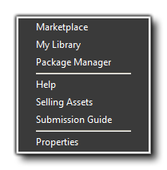

Marketplace is where you can buy and sell assets. These can be
frameworks, engines, sprites, scripts, shaders, or anything else
related to making games with GameMaker: Studio. You can find
a list of dedicated tutorials that cover exactly how to create,
upload and sell your assets from the YoYo Games Knowledge Base here
- Marketplace.
The menu shown above is the menu after you have logged in to your
YoYo Account. If you do not have an account yet, then you need to
go to the The Account Menu
and select "Login" and from the login window click the text
"Create New Account.
Once you have created your YoYo Account and logged in, clicking any
of the first three menu options will open the Marketplace window on
one of the three available tabs: Marketplace, My
Library, or Package Manager. You can find more
information on these from the section on the Marketplace. The
Marketplace menu also has the following options:
- Help: This will take you to the YoYo Games Knowledge Base where you can get help with any issues.
- Selling Assets: Clicking this will take you to the YoYo Games Knowledge Base Article on creating and selling your game asset packages.
- Submission Guide: Clicking this will take you to the YoYo Games Knowledge Base Article containing the rules and guidelines for creating and selling asset packages on Marketplace.
- Properties: This will open the Marketplace properties window where you can create a profile certificate and change certain settings. You can get further information from the page on Marketplace.
| Converted from CHM to HTML with chm2web Standard 2.85 (unicode) |